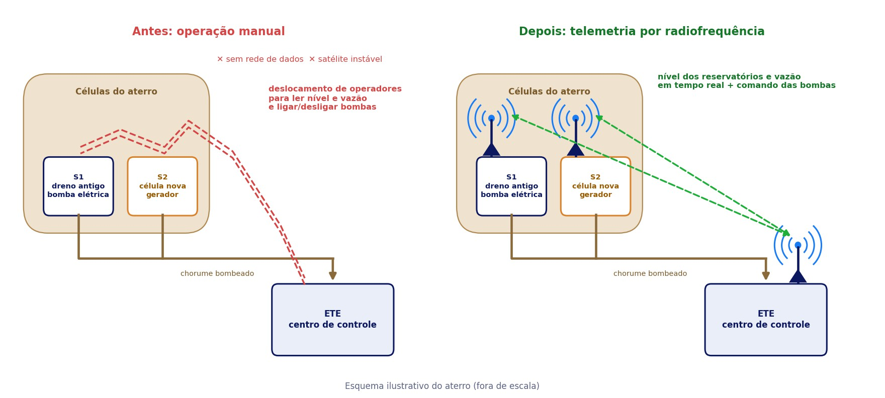
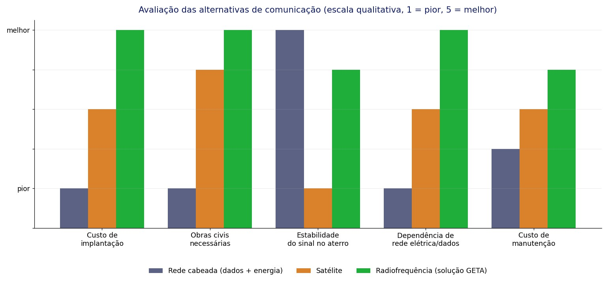
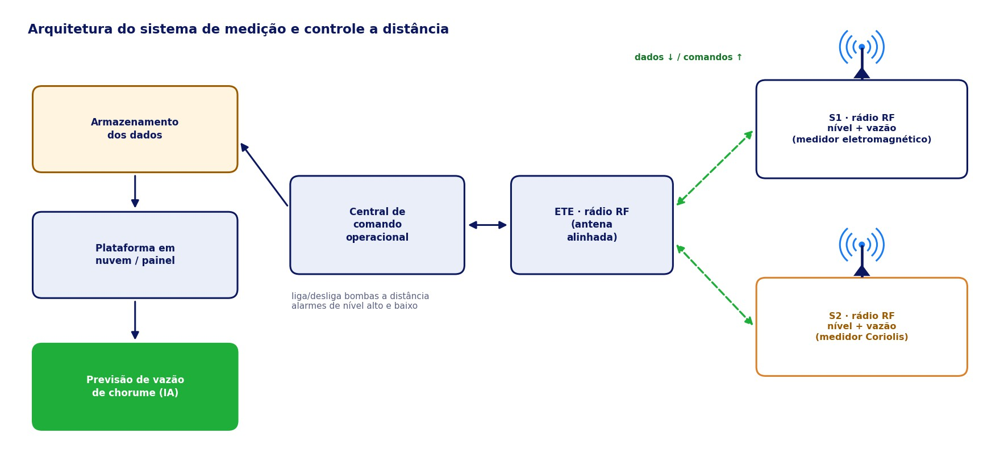
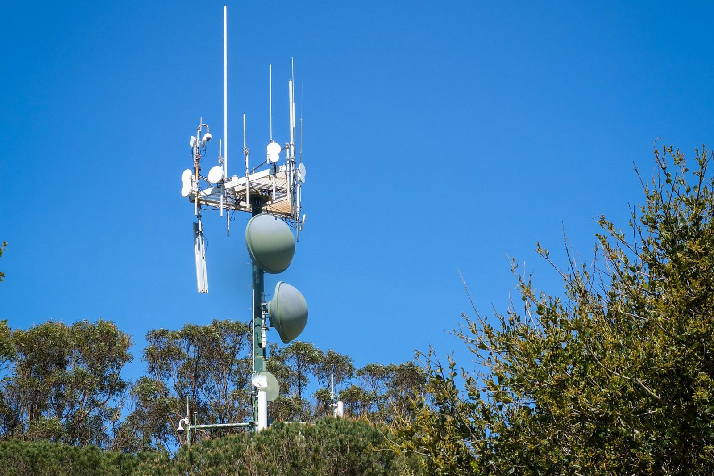
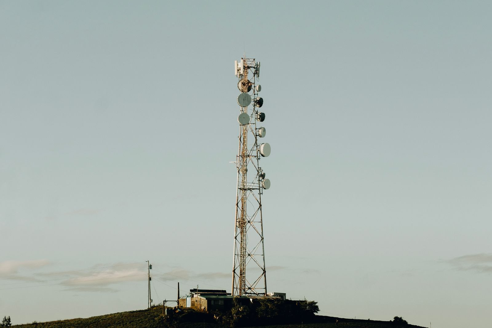
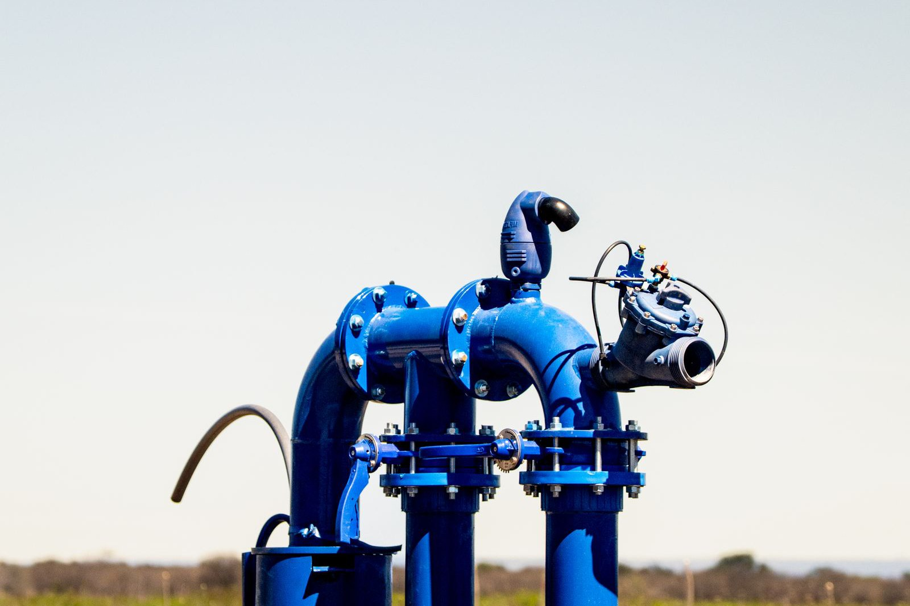

Problema / desafio do cliente
Aterros sanitários ficam, em geral, longe dos centros urbanos, com pouca cobertura de rede de dados e, em alguns pontos, sem fornecimento regular de energia elétrica. Mesmo assim, o chorume gerado nas células precisa ser bombeado continuamente até a estação de tratamento (ETE), e a operação depende de saber, a todo momento, o nível dos reservatórios e a vazão bombeada.
No aterro atendido, não havia nenhum sistema automatizado de aquisição e comunicação: a leitura de nível e vazão e o liga/desliga das bombas eram feitos manualmente, com operadores se deslocando entre as estações.
Contexto e características do processo
- Aterro sanitário na região Sul do Brasil, que recebe resíduos de uma região metropolitana.
- Duas estações de bombeamento de chorume até a ETE:
- S1, no dreno das células antigas: estação eletrificada, com bombas elétricas e medidor de vazão eletromagnético;
- S2, na célula nova: sem rede elétrica, alimentada por gerador a combustível, com medidor de vazão Coriolis.
- As estações ficam a centenas de metros da ETE, em terreno de operação ativa do aterro.

Diagnóstico e dados analisados
- Sem transmissão remota de nível e vazão: os dados operacionais eram coletados à mão.
- Uma tentativa anterior com internet via satélite não funcionou: o sinal ficava instável no ambiente do aterro, com interferências que comprometiam a comunicação.
- Levar rede cabeada de dados e de energia até as estações exigiria obras civis, valas e tubulações em área de operação, com custo alto de implantação e de manutenção.
- A operação manual aumentava o tempo de resposta a falhas (risco de transbordamento ou de bomba operando a seco), elevava os custos e ocupava a equipe técnica da ETE com inspeções de campo.
Metodologia utilizada
- Levantamento em campo das estações S1 e S2, dos medidores de vazão, dos sensores de nível e das condições de energia de cada ponto.
- Avaliação das alternativas de comunicação: rede cabeada, satélite e radiofrequência.
- Definição da arquitetura: rádios em S1, S2 e na ETE, com integração aos medidores e ao painel das bombas.
- Instalação, calibração e alinhamento das antenas em direção à ETE para garantir um enlace estável.
- Integração com a central de comando da ETE, armazenamento dos dados e testes de comunicação e de comando.

Solução de engenharia desenvolvida
Implantamos um sistema de comunicação por radiofrequência que liga as estações de bombeamento S1 e S2 diretamente à ETE:
- os dados de nível dos reservatórios de S1 e S2 e as leituras de vazão em linha dos medidores são transmitidos em tempo real;
- o enlace é bidirecional: a central de comando da ETE também envia comandos para ligar e desligar as bombas a distância, integrando o rádio ao sistema elétrico das bombas;
- as antenas foram calibradas e alinhadas em direção à ETE, criando um canal sem fio estável e confiável;
- os dados ficam armazenados e podem ser enviados a uma plataforma em nuvem, base para a previsão de vazão de chorume com inteligência artificial.

Tecnologias e processos envolvidos
- Rádios e antenas de radiofrequência ponto a multiponto, com enlace bidirecional.
- Medidores de vazão eletromagnético e Coriolis, e sensores de nível dos reservatórios.
- Integração com o painel elétrico das bombas para comando remoto.
- Central de comando operacional na ETE, com armazenamento dos dados.
- Preparação para plataforma em nuvem e modelos de IA de previsão de vazão.

Modelagem, simulação e ferramentas computacionais
Modelos, simulações e ferramentas usados (balanços, CFD, Python, MATLAB, redes neurais, DMD, dashboards…) e o que cada um permitiu avaliar ou decidir.
Resultados obtidos
- Leitura em tempo real de nível e vazão das duas estações de bombeamento, direto na ETE.
- Controle remoto das bombas, com resposta mais rápida a níveis altos ou baixos nos reservatórios.
- Sem rede cabeada de dados ou de energia: nenhuma obra civil, vala ou tubulação nova em área de operação do aterro.
- Solução estável onde a internet via satélite não funcionou.
- Menos deslocamento de operadores e equipe técnica liberada para atividades de maior valor na ETE.
- Registro contínuo dos dados de vazão, base para balanços hídricos e para modelos de previsão de chorume.
CAPEX/OPEX e análise técnico-econômica
A radiofrequência evitou o principal custo de implantação de uma rede cabeada: valas, eletrodutos, cabos e obras civis em área de operação do aterro, que também teriam de ser refeitos à medida que as células avançam. No custo operacional, o ganho vem da redução das rondas de leitura e da resposta mais rápida a falhas de bombeamento.
Escopo e responsabilidades da GETA
A GETA foi responsável por:
- diagnóstico em campo e avaliação das alternativas de comunicação;
- projeto da arquitetura de telemetria e controle;
- instalação, calibração e alinhamento das antenas;
- integração com os medidores, o painel das bombas e a central de comando da ETE;
- testes, comissionamento e acompanhamento técnico.
Principais entregáveis
- Sistema de telemetria por radiofrequência instalado e em operação nas estações S1, S2 e na ETE.
- Comando remoto das bombas a partir da central de comando.
- Armazenamento contínuo dos dados de nível e vazão.
- Documentação da arquitetura e orientações de operação.
Galeria

